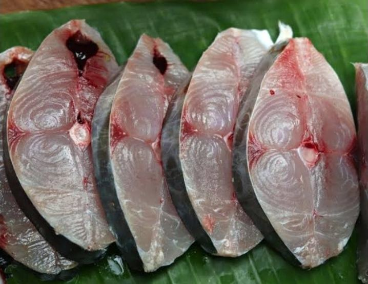

The Swahili kitchen
Eight recipes for the fish we actually sell — measured, timed, and tested against the way it is cooked here.
Every recipe names the fish it needs and links straight to it. Nothing here calls for an ingredient you cannot find in a Kenyan market.

The dish the Swahili coast is known for. Fish is grilled once, painted with a thick coconut sauce, then grilled again so…
Serves 4 · Read the recipe →
Octopus rewards patience and punishes impatience. Simmer it slowly until a knife slides in without resistance, then let …
Serves 4 · Read the recipe →
Biryani is the dish of celebration on this coast, and nguru is the fish for it — dense enough to hold its shape through …
Serves 6 · Read the recipe →
Fifteen minutes from pan to table, and the most reliable way to make people think you can cook. The only way to ruin it …
Serves 4 · Read the recipe →
The cheapest, most nutritious thing on the whole slab, and arguably the best. Fried until the bones go crisp, sardines a…
Serves 4 · Read the recipe →
The everyday coastal curry — the one that gets made on a Tuesday without anyone thinking about it. Tewa is the classic c…
Serves 4 · Read the recipe →
Two minutes on fierce heat and it is perfect. Three and it is ruined. Calamari follows the same law as octopus — very fa…
Serves 4 · Read the recipe →
Ten minutes of cooking and a broth worth mopping up with bread. Mussels make their own stock as they open, which does mo…
Serves 4 · Read the recipe →